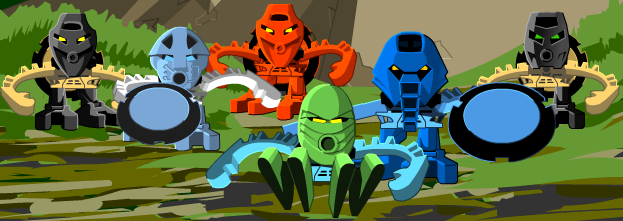

As their name would suggest, the Matoran are the primary species that inhabit the Matoran Universe.
As their name would suggest, the Matoran are the primary species that inhabit the Matoran Universe.
They were created solely for the purpose of maintaining and working in the Universe, building various cities and villages scattered across the world.
Small but diligent
 The Matoran are quite small in size, although it can vary depending on their home region.
The Matoran are quite small in size, although it can vary depending on their home region.
Because of their tiny stature they often need the protection of the Toa or other defenders, inventions or technologies of their own.
Devoted and loyal
All Matoran (give or take the occasional treacherous individual) are devoted to and follow the Great Spirit Mata Nui. They show their loaylty by throwing different kinds of events and celebrations in the name of the Great Spirit and - of course - following the Three Virtues, which are the backbone of a Matorans life.

Many types of Matoran exist, each of whom can usually be identified by the colour of their armor:
Red, orange, yellow or black → Ta-Matoran, the Matoran of Fire
Various shades of blue → Ga-Matoran, the Matoran of Water
Various shades of green → Le-Matoran, the Matoran of Air
Brown, tan, yellow, orange or black → Po-Matoran, the Matoran of Stone
White, gray, light blue, black or silver → Ko-Matoran, the Matoran of Ice
Dark gray, orange,purple, tan or black → Onu-Matoran, the Matoran of Earth
